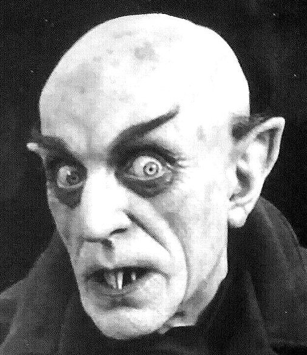

Om filmen
Nosferatu
Horrorklassikeren Nosferatu fra 1922 følger verdens grimmeste vampyr på hans hærgen gennem Transsylvanien og den fiktive, tyske havneby Wisborg.
Den ikoniske vampyr blev spillet af skuespilleren Max Schreck.
Filmen er et stemningsfyldt mesterværk af lys og skygge.
Bestil billet